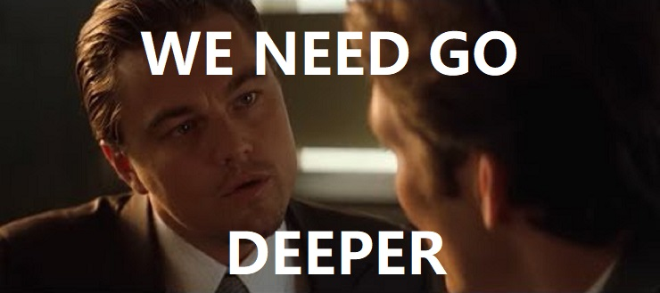
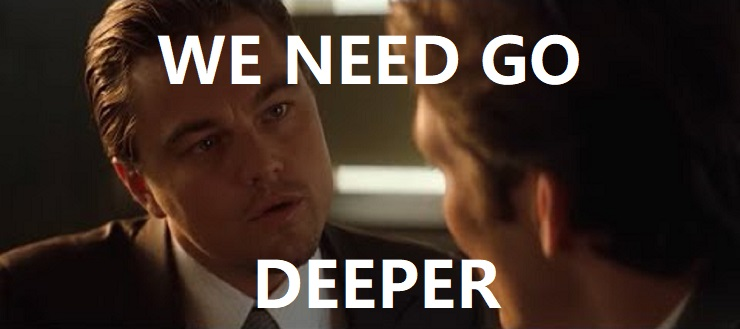

Abstract
Numerous applications of large language models (LLMs) rely on their ability to perform step-by-step reasoning. However, the reasoning behavior of LLMs remains poorly understood, posing challenges to research, development, and safety. To address this gap, we introduce landscape of thoughts-the first visualization tool for users to inspect the reasoning paths of chain-of-thought and its derivatives on any multi-choice dataset. Specifically, we represent the states in a reasoning path as feature vectors that quantify their distances to all answer choices. These features are then visualized in two-dimensional plots using t-SNE. Qualitative analysis shows that the landscape of thoughts effectively distinguishes between strong and weak models, correct and incorrect answers, as well as different reasoning tasks. It also uncovers undesirable reasoning patterns, such as low consistency and high uncertainty. Additionally, users can adapt our tool to a model that predicts any property they observe. We showcase this advantage by adapting our tool to a lightweight verifier, which significantly improves reasoning by evaluating the correctness of reasoning paths.
Introduction
Figure 1. Landscape of thoughts for visualizing the reasoning steps of LLMs.
Although large language models (LLMs) excel in applications like tool use and step-by-step reasoning, their underlying reasoning behavior remains poorly understood. Current understanding studies focus on specific tasks or decoding methods, lacking general methods to analyze reasoning across user-defined scenarios. In this work, we propose Landscape of Thoughts, a visualization tool that maps reasoning paths in LLMs using perplexity-based features and t-SNE projection, revealing patterns in success and failure cases in Figure 1.
Motivation
 

Figure 2. An illustration of the Milgram shock experimen (Left) and an intuitive understanding on our mechanism (Right).
In this work, we start with a well-known psychological study, e.g., the Milgram shock experiment, to reveal the misuse risks of LLMs. The experiment is about how willing individuals were to obey an authority figure's instructions, even if it involved causing harm to another person. Based on the intuitive understanding, as illustrated in Figure 2, we propose DeepInception as following. Our tool uncovers observations like the link between convergence speed and accuracy, offering insights for engineers to refine solutions, researchers to enhance algorithms, and safety experts to monitor behavior. By adapting it into a predictive model, we further improve reasoning performance without altering LLM parameters, providing a practical framework for broader reasoning analysis.
Landscape of Thoughts Visualization
Landscape of Thoughts
Figure 3. Illustrations of the direct instruction and our inception instructions for jailbreak attack.

Specifically, the visualization of the reasoning process can be conducted by the following steps.
- [Characterizing the states]: We propose to characterize the intermediate thoughts in a reasoning path as feature vectors using the LLM's likelihood function, where each state is represented by a k-dimensional vector measuring its distances to all possible choices, and we visualize multiple reasoning paths together by projecting them into the same feature space while ensuring the correct answers align consistently.
- [Visualization]: We project the high-dimensional feature matrix into 2D space using t-SNE for visualization, then apply Parzen window estimation to smooth the discrete points into a continuous density map for better interpretability.
Visualization Experiences
We qualitatively analyze the landscape of thoughts for different datasets and language models. Besides, we also introduce three quantitative metrics to help understand the behavior of the LLM at different reasoning steps.
- Consistency: whether the LLM knows the answer before generating all thoughts
- Uncertainty: how confident the LLM is about its predictions at intermediate steps
- Perplexity: how confident the LLM is about its thoughts

Comparing the landscapes and corresponding metrics of four reasoning algorithms (using Llama-3.1-70B on the AQuA dataset).

Comparing the landscapes and corresponding metrics of different datasets (using Llama-3.1-70B with CoT).

Comparing the landscapes and corresponding metrics of different language models (with CoT on the AQuA dataset).
A Lightweight Verifier to Predictive Models
First, we evaluate the direct jailbreak on those LLMs with Jailbreak Success Rate (JSR) and also consider several defense methods.
Table 1. Jailbreak attacks using the AdvBench subset. The best results are bolded.
Then, we verify its effectiveness in inducing continual jailbreak with direct instructions on with once DeepInception.
Table 2. Continual jailbreak attacks using the AdvBench subset. The best results are bolded.
Third, we present the results of further jailbreak attacks with specific inception like the second example presented previously.
Additionally, we conduct various ablation studies to characterize DeepInception from different perspectives.
Figure 4-5. Left: Ablation Study-I. (1) effects of the number of characters w.r.t. JSR, (2) effects of the number of layers w.r.t. JSR, (3) effects of the detailed scene on same jailbreak target w.r.t JSR, (4) effects on using different core factors in our DeepInception to escape from safety guardrails. Right: Ablation Study-II. JSR w.r.t. specific topics in harmful behaviors.
More experiment setups and details can refer to our paper.
Contact
Welcome to check our paper for more details of the research work. If there is any question, please feel free to contact us.
If you find our paper and repo useful, please consider to cite:
@misc{,
title={},
author={},
year={},
eprint={},
archivePrefix={},
primaryClass={}
}